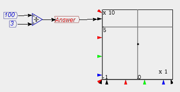
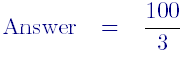
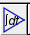
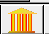

Equations are entered in Minsky graphically. Mathematical operations like addition, multiplication and subtraction are performed by wiring the inputs up to the relevant mathematical block. The output of the block is then the result of the equation.
For example, a simple equation like
100/3 = 33.3
is performed in Minsky by defining a constant block with a value of 100, defining another with a value of 3, and wiring them up to a divide-by block. Then attach the output of the divide block to a variable, and run the model by clicking on :

If you choose File/Output LaTeX and load the equation into a LaTeX processor, you will see that it is:

Very complex equations--including dynamic elements like integral blocks  and Godley Tables --are designed by wiring up lots of components, with the output of one being the input of the next. See the tutorial for examples.